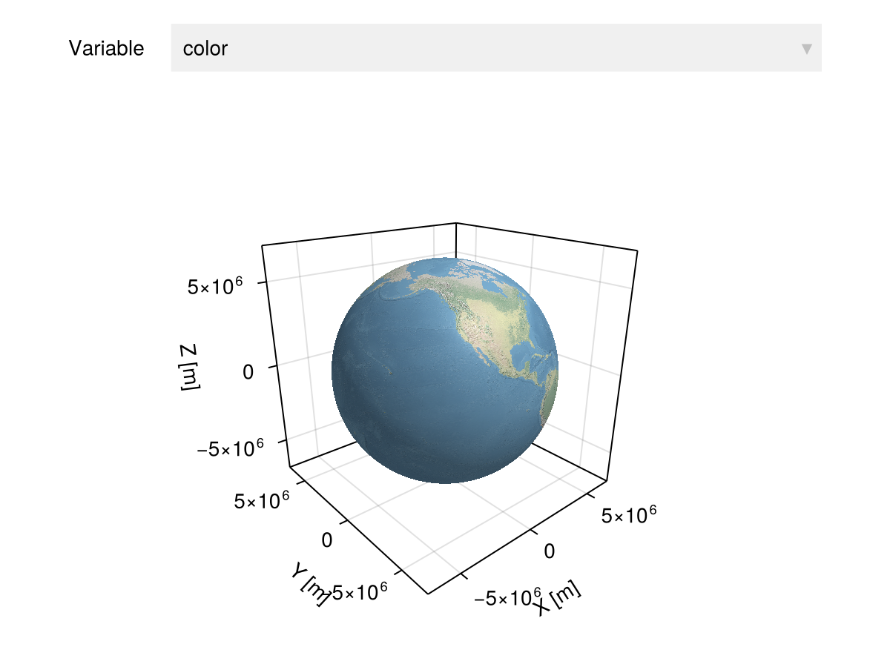
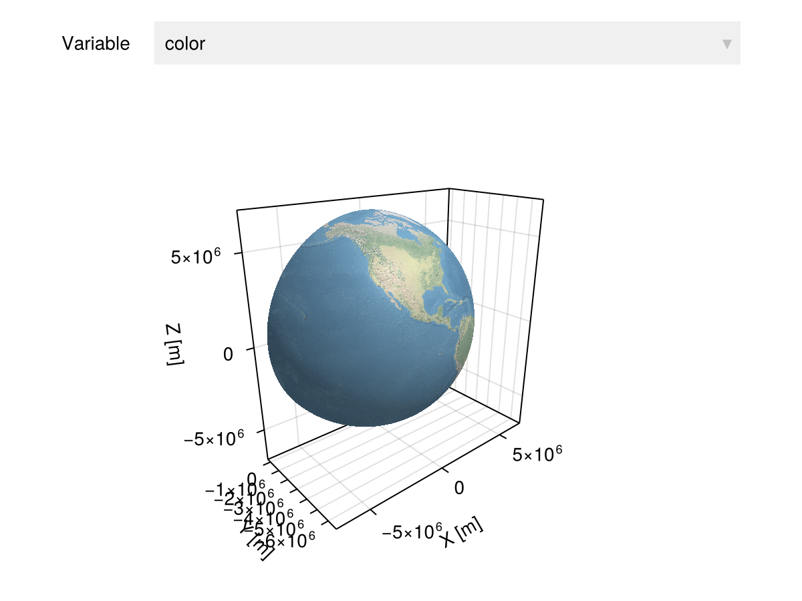
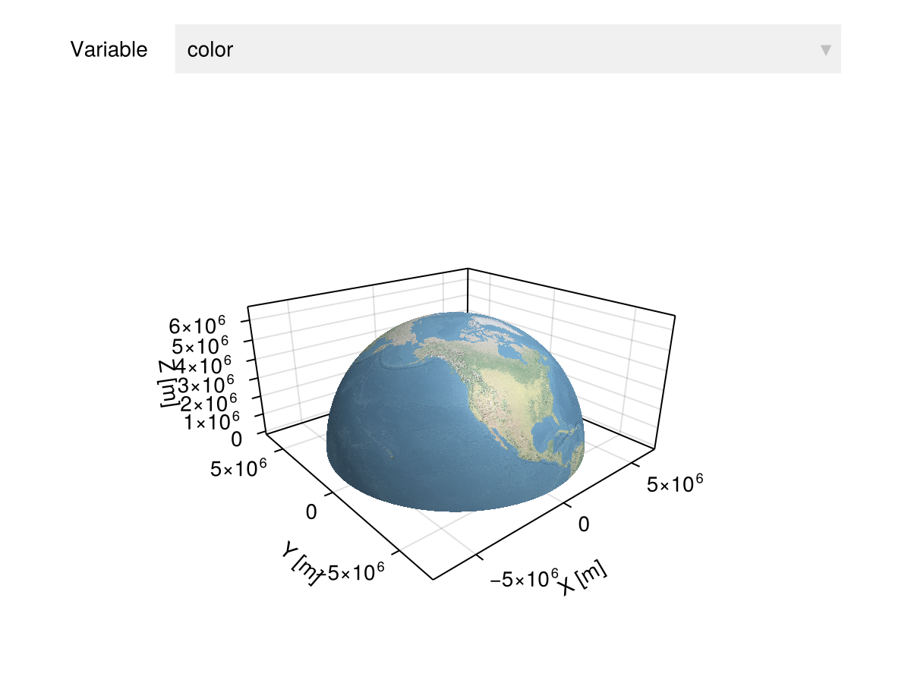
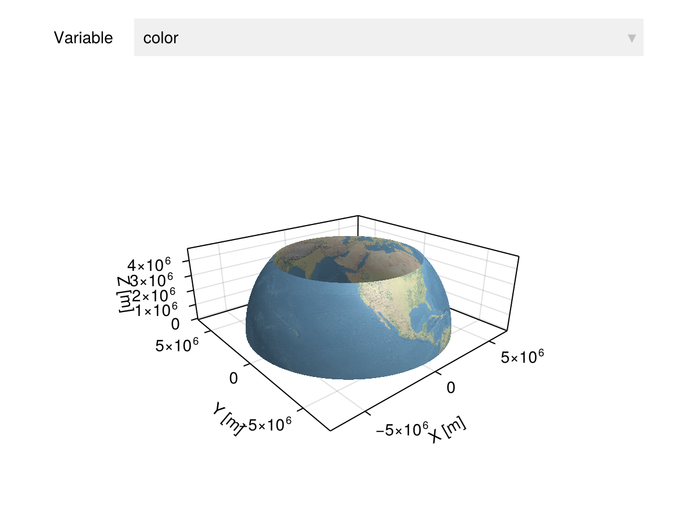
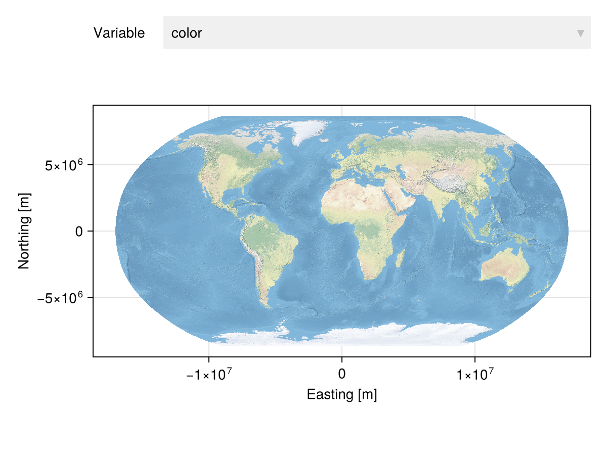
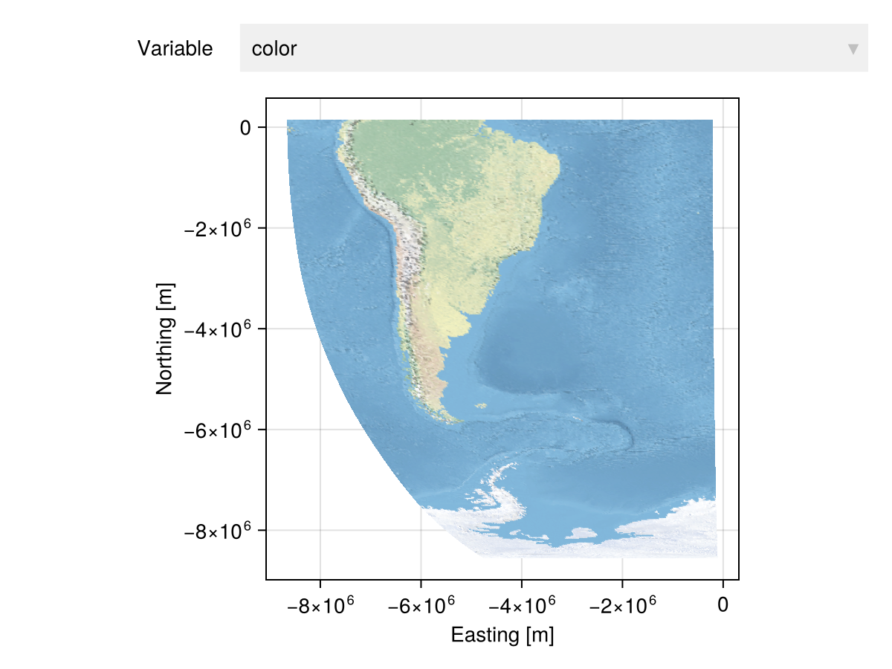
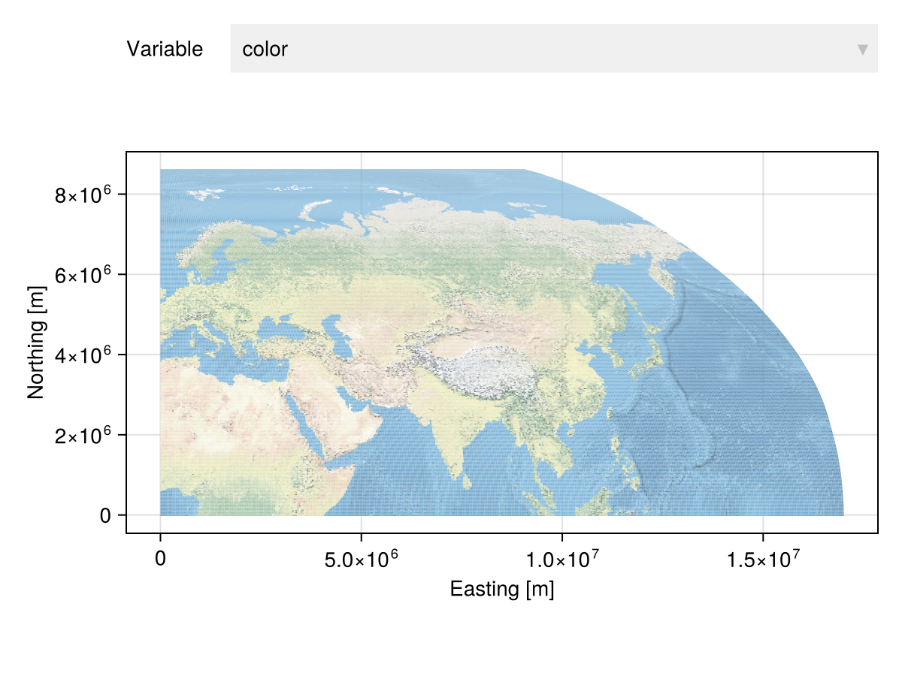
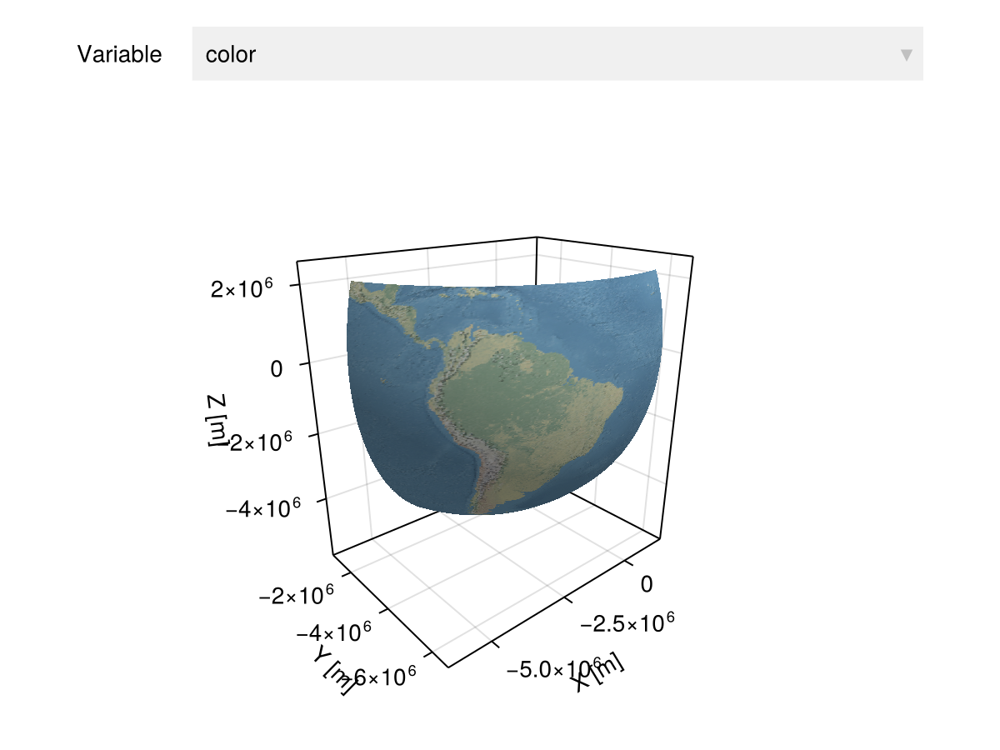

How to work with "rasters"?
A "raster" is nothing more than a Julia array that is georeferenced over a geospatial grid. The "raster" model is popular in the scientific community for two main reasons:
It provides convenient syntax to access grid elements within "rectangular" regions, including syntax to name array dimensions as "x", "y", ... and extract rectangular regions based on coordinate values.
It can rely on DiskArrays.jl and similar packages for loading large datasets lazily, without consuming all the available RAM.
We illustrate how GeoTables over Grids share these benefits.
Convenient syntax
n-dimensional array syntax
Any GeoTable over a Grid supports the n-dimensional array syntax in the row selector.
Consider the following example from the NaturalEarth dataset:
using GeoArtifacts
raster = NaturalEarth.naturalearth1("water") |> Upscale(20, 10)
raster |> viewer
We can check the size of the underlying grid with
size(raster.geometry)(810, 810)This dataset is stored with LatLon coordinates. For convenience, we always store the "horizontal" coordinate along the first axis of the grid (longitude in this case). We can slice the Earth as follows:
raster[(1:400, :), :] |> viewer
raster[(:, 1:400), :] |> viewer
raster[(:, 200:400), :] |> viewer
We can also slice after 2D projections, which is more common in the literature:
projec = raster |> Proj(Robinson)
projec |> viewer
projec[(200:400, 400:800), :] |> viewer
Slice transform syntax
To select a subset of the dataset from actual coordinate ranges, we can use the Slice transform. To slice the x and y coordinates of the projected dataset with values in kilometers, we do:
km = u"km" # define kilometer unit
slice = projec |> Slice(x=(0km, 20000km), y=(0km, 10000km))
slice |> viewer
Notice that the result is no longer a "raster" because the Robinson projection deforms the graticule, and we can’t simply rely on the sorted x and y coordinates of the first row and column to find indices across the other rows and columns. Although the result cannot be represented with the "raster" model, it can be represented with the GeoTable model over a lazy domain view.
The x and y options can be replaced by lon and lat if the crs of the domain is geographic. Below is an example of subgrid over the ellipsoid using lat and lon ranges:
° = u"°" # define degree unit
brazil = raster |> Slice(lat=(-60°, 20°), lon=(-100°, -20°))
brazil |> Rotate(RotZ(-45)) |> viewer
Lazy loading
The Grid itself is lazy, it doesn’t allocate memory:
Base.summarysize(raster.geometry)168Remember that a n-dimensional array is simply a flat memory buffer with an additional tuple containing the number of elements along each dimension. In Julia, the vec and reshape operations are lazy:
X = rand(1000, 1000)
@allocated vec(X)32@allocated reshape(vec(X), 1000, 1000)6144If you have a DiskArray or any other array type that satisfies your memory requirements, simply georef it over a Grid to obtain a "lazy" GeoTable:
georef((; x=vec(X)), CartesianGrid(1000, 1000))| 1000000×2 GeoTable over 1000×1000 CartesianGrid | |
| x | geometry |
|---|---|
| Continuous | Quadrangle |
| [NoUnits] | 🖈 Cartesian{NoDatum} |
| 0.977847 | Quadrangle((x: 0.0 m, y: 0.0 m), ..., (x: 0.0 m, y: 1.0 m)) |
| 0.303321 | Quadrangle((x: 1.0 m, y: 0.0 m), ..., (x: 1.0 m, y: 1.0 m)) |
| 0.234672 | Quadrangle((x: 2.0 m, y: 0.0 m), ..., (x: 2.0 m, y: 1.0 m)) |
| 0.878834 | Quadrangle((x: 3.0 m, y: 0.0 m), ..., (x: 3.0 m, y: 1.0 m)) |
| 0.00222546 | Quadrangle((x: 4.0 m, y: 0.0 m), ..., (x: 4.0 m, y: 1.0 m)) |
| 0.0142751 | Quadrangle((x: 5.0 m, y: 0.0 m), ..., (x: 5.0 m, y: 1.0 m)) |
| 0.960511 | Quadrangle((x: 6.0 m, y: 0.0 m), ..., (x: 6.0 m, y: 1.0 m)) |
| 0.0286823 | Quadrangle((x: 7.0 m, y: 0.0 m), ..., (x: 7.0 m, y: 1.0 m)) |
| 0.614325 | Quadrangle((x: 8.0 m, y: 0.0 m), ..., (x: 8.0 m, y: 1.0 m)) |
| 0.0425653 | Quadrangle((x: 9.0 m, y: 0.0 m), ..., (x: 9.0 m, y: 1.0 m)) |
| ⋮ | ⋮ |
The GeoIO.jl package is highly recommended as it will take care of these low-level memory details for you.